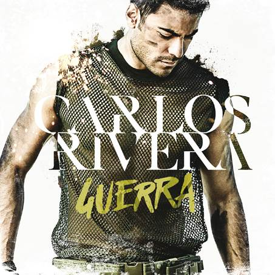
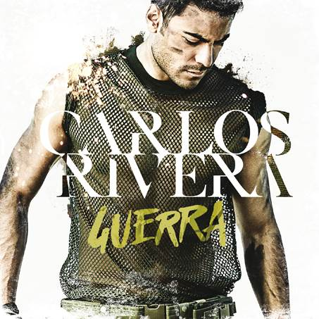

Eventos
Carlos Rivera tour dates


Carlos Rivera Guerra
Originario de Huamantla, Tlaxcala, nació el 15 de marzo de 1986.
La crítica especializada nacional y extranjera ha reconocido sus cualidades vocales e histriónicas, así como su fuerza
interpretativa,esto, aunado a un trabajo y entrega constantes en cada escenario en el que se para, produce una conexión
con el público, empatía y admiración… por todo ello, Carlos Rivera se ha dado a conoce con paso firme
en diversos países y, hoy por hoy, es una de las figuras de México con mayor proyección y futuro a nivel internacional.
Desde muy niño, Carlos siempre disfrutó enormemente cantar; no perdía la oportunidad
de hacerlo en cualquier espacio que encontraba, igual lo hacía en fiestas como en los diversos
concursos del colegio o de su estado, Tlaxcala, y su ciudad natal, Huamantla, los cuales siempre ganaba.
En varias ocasiones ganó el concurso estatal de canto y pronto se convirtió en toda una personalidad en la región.
En 2004 tras pasar infinidad de pruebas, audiciones y desafíos, logró entrar al reality de Televisión Azteca
“La Academia”, después de meses de competencia se ganó el respeto de los jueces
y con más del 80% de los votos se convirtió en el máximo ganador de la tercera generación.
Después de conseguir el 1er. lugar en este programa, Carlos se convirtió en una figura respetada y conocida en millones
de hogares mexicanos y en ese mismo año, el cabildo de su ciudad lo nombró por unanimidad
“La Academia”, después de meses de competencia se ganó el respeto de los jueces y con más del 80%
de los votos se convirtió en el máximo “Hijo Predilecto de Huamantla”.
 
Carlos Rivera tour dates
@CarlosRiveraOfc